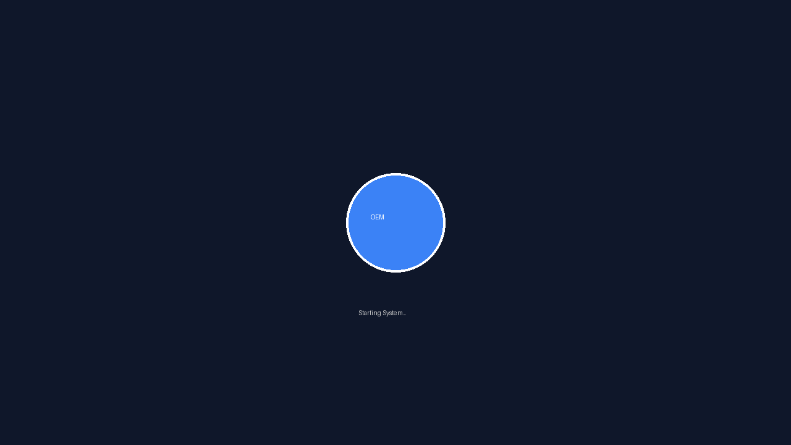
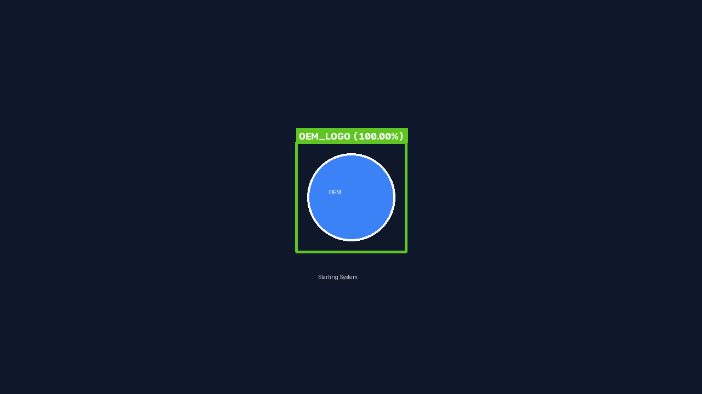
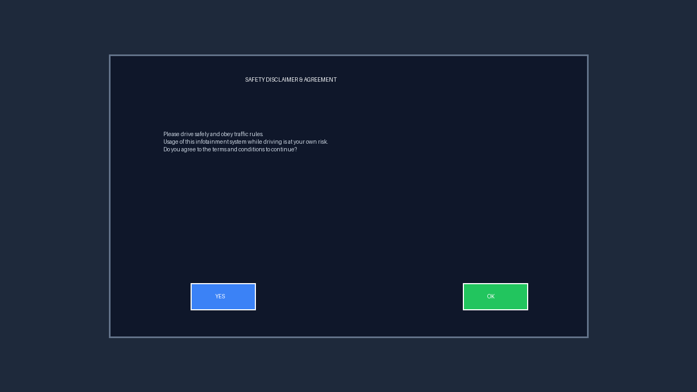
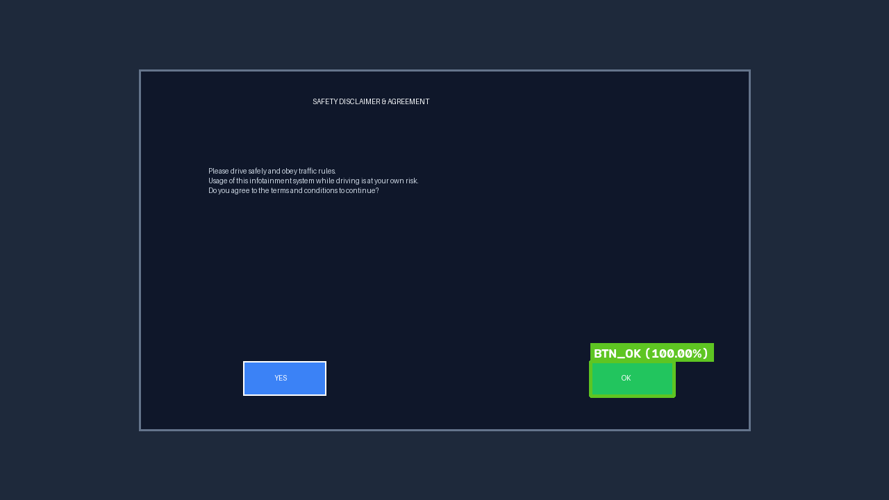
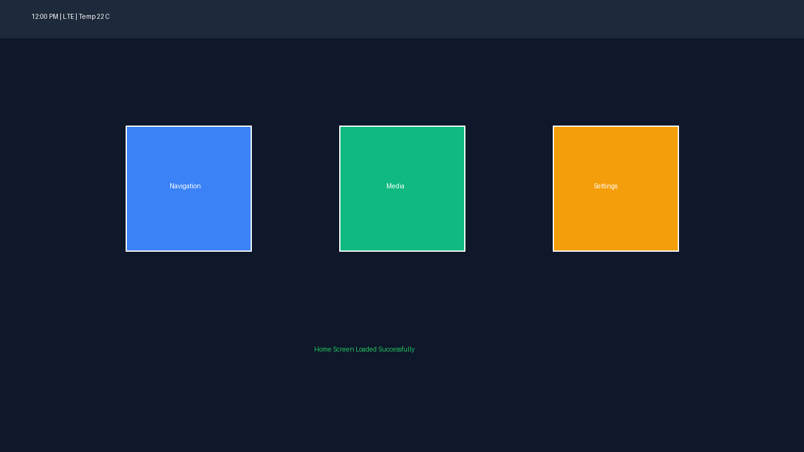

Automated validation for Automotive Infotainment Displays
Infotainment boot completion verified via getprop
OEM logo detected at bounding box x=540, y=260, w=200, h=200 with confidence 100.00%


Boot logo disappeared successfully. System transitioned to disclaimer screen.
Found 'OK' button dynamically using template_matching at bounding box x=850, y=520, w=120, h=50. Calculated center coordinate is (910, 545).


Tapped 'OK' button center coordinate (910, 545)
Screen transitioned successfully. Disclaimer pop-up dismissed and main screen loaded.
